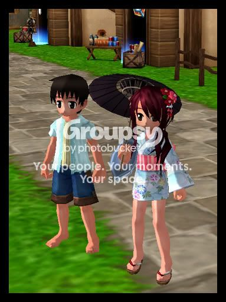
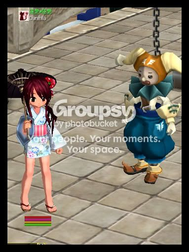
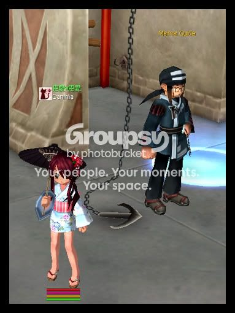
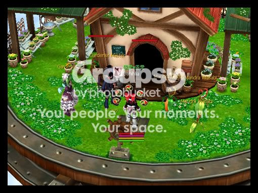
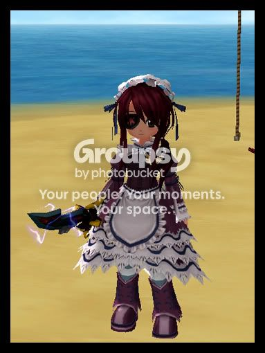

เปลี่ยนเป็นการ์เดนเนอร์แล้วจ้า เดี๋ยวจะทำไกด์แบบมีรูปให้ละกัน
อ่ะ ไกด์การ์เดนเนอร์แบบมีรูป...

1. เอา Mineral Water ไปให้ Bad Merchant กลางอัพทาวน์ คุยให้ครบทุกข้อ จะได้ความว่ามีบางคนขโมย Elizabeth ของเขาไป แล้วเขาจะให้เราตามฟลายอิ้งการ์เด้นลึกลับไปที่ฟาร์อีส

2. ไปร้านเหล้าที่ฟาร์อีส จะเจอคนคนหนึ่งถูกเหล่าแครอทและวาซาบิรุมล้อมอยู่ พอคุยกับเขาก็จะรู้ว่าเขาโดนขโมย Juliet ไป

3. ออกมาคุยกะ Rube หน้าร้านเหล้า เขาจะบอกว่าเห็นฟลายอิ้งการ์เด้นไปทางเกาะไมไม

4. วิธีไปเกาะไมไมสำหรับคนที่ยังไม่มีฟลายอิ้งการ์เด้น ให้ไปซื้อบัตรผ่านเมือง Tonka กับ NPC ประจำอาชีพไฟท์เตอร์ในหอเปลี่ยนอาชีพที่อัพทาวน์ แล้วเดินลงมาทางใต้อัพทาวน์ จะมี NPC เปิดบริการวาร์ปไปเมืองทองก้า(ต้องมีบัตรผ่านหรือลงทะเบียนที่ทองก้าถึงจะใช้บริการได้)

5. มาถึงทองก้าแล้วเข้าวาร์ปไปไมไมอีกต่อหนึ่ง

6. เมื่อถึงไมไมให้วิ่งย้อนลงมายังชายหาด จะมีเชือกสวนลอยเส้นหนึ่งให้ขึ้นสวนลอยนี้ได้เลย จากนั้นเดินวนไปหลังบ้านเพื่อคุยกับ Gardenner Master เขาจะยืนอยู่ข้างๆน้ำพุ จากนั้นก็ให้ตอบคำถามเขาตามลำดับดังนี้ (ขอทำตัวอักษรขาวไว้สำหรับคนอยากทำเอง ถ้าสังเกตดีๆตั้งแต่เริ่มทำก็ตอบได้ไม่ยากครับ)
ชุดแรก
- ช่วย Juliet กลับมา
- อาจจะเป็นพืช
- เล่าให้ฟัง
- 1 ตัว
- 2 ตัว
- ไม่มีสักตัว
ชุดสอง
- ช่วย Elizabeth กลับมา
- ผิวลื่นๆ
- มีเสน่ห์
- ผมเรียบสวยสีเขียวเข้ม
- จบ
7. เข้าไปในบ้านแล้วคุยกับ Gardenner เขาจะเล่าเรื่องบางอย่างให้ฟัง แล้วจะให้เราไปสอบถามข้อมูลจากบุคคลที่เชี่ยวชาญเรื่องพืชที่ฟาร์อีสอีกที

8. กลับไปยังฟาร์อีส เดินตามถนนเลียบแม่น้ำมาจะเจอ NPC Mother ให้เดินเลยไปอีกหน่อยจะพบกับลุงคนหนึ่งยืนอยู่ข้างๆถังขยะ ให้คุยกับแก แล้วลุงจะเล่าเรื่องราวในอดีตให้ฟัง
9. กลับไปคุยกะ Gardener บนบ้าน

10. คุยกับหัวไชเท้าที่ยืนข้างๆวาร์ป แถวๆร้านขายของบนเกาะไมไม (อยู่ตรงตรอกเล็กๆ ลองหาดูดีๆ) แล้วเดินเข้าวาร์ปไป มันจะพาเรามายังดันเจี้ยนส่วนตัว
11. เมื่อเข้ามาในวาร์ปให้คุยกับ NPC ใกล้ๆทางเข้า เขาจะให้เมล็ดกาฝากเรามาฟรีๆ 30 ชิ้น แต่ถ้าต้องการเพิ่มสามารถซื้อกับเขาได้อีก ถ้าเลเวลสูงๆ ไม่ต้องซื้อเพิ่มก็ได้ หาเอาจากต้นไม้กับกล่องไม้ในดันเจี้ยนเอา กล่องไม้ก็ดูดีๆหน่อย เพราะมีมอนสเตอร์ชื่อ Wood Box ที่รูปร่างคล้ายกล่องไม้มาก (ส่วนล่องไม้จริงๆจะชื่อ Wooden Box) ในดันเจี้ยนนี้หากจะฆ่าแครอท วาซาบิ หรือไชเท้าต้องเอาเมล็ดกาฝากปาใส่เท่านั้นนะ ส่วนมอนสเตอร์และสิ่งของอื่นๆใช้อาวุธปกติตีเอาได้
12. วิ่งไปตามทางในดันเจี้ยนเพื่อหาห้องบอสให้เจอ เมื่อเจอแล้วอย่าลืมกดใช้เมล็ดกาฝากก่อนทำการโจมตีด้วย โดยบอสจะเป็นต้นไม้คล้ายๆ Soul Tree ในดันเจี้ยนฟาร์อีส มีสกิล Earth Cry ที่จะทำให้เกิดแผ่นดินไหวแล้วทำเดเมจใส่เราติดๆกัน แต่ไม่โหดมากเท่าไร

13. ล้มบอสได้แล้วก็ให้ยืนรอสักแป้บ จะมีวาร์ปโผล่มาจากจุดที่บอสตาย ให้เดินเข้าวาร์ปนี้มา แล้วจะมาโผล่ที่สวนลอยของการ์เดนเนอร์มาสเตอร์ คุยกับการ์เดนเนอร์มาสเตอร์ไปเรื่อยๆ กดรับเข็มกลัดมาก็เป็นอันจบเควสการ์เดนเนอร์แล้ว (ชุดและของอาชีพการ์เดนเนอร์ซื้อได้จาก Gardenner ได้เลย)

จบละจ้า...